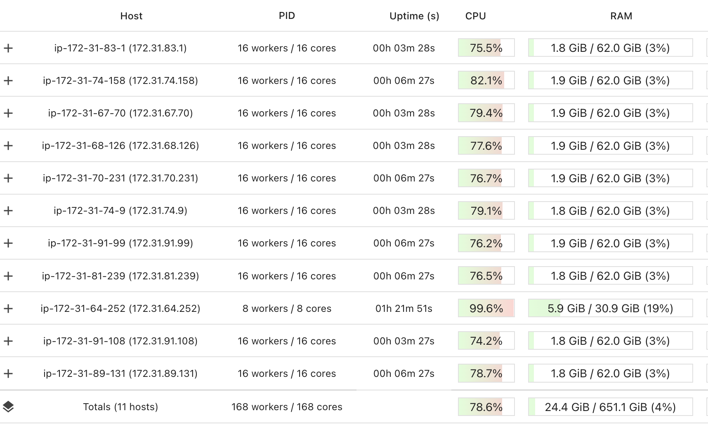

Using Ray for Highly Parallelizable Tasks
Using Ray for Highly Parallelizable Tasks#
While Ray can be used for very complex parallelization tasks, often we just want to do something simple in parallel. For example, we may have 100,000 time series to process with exactly the same algorithm, and each one takes a minute of processing.
Clearly running it on a single processor is prohibitive: this would take 70 days. Even if we managed to use 8 processors on a single machine, that would bring it down to 9 days. But if we can use 8 machines, each with 16 cores, it can be done in about 12 hours.
How can we use Ray for these types of task?
We take the simple example of computing the digits of pi.
The algorithm is simple: generate random x and y, and if x^2 + y^2 < 1, it’s
inside the circle, we count as in. This actually turns out to be pi/4
(remembering your high school math).
The following code (and this notebook) assumes you have already set up your Ray cluster and that you are running on the head node. For more details on how to set up a Ray cluster please see Ray Clusters Getting Started.
import ray
import random
import time
import math
from fractions import Fraction
# Let's start Ray
ray.init(address='auto')
We use the @ray.remote decorator to create a Ray task.
A task is like a function, except the result is returned asynchronously.
It also may not run on the local machine, it may run elsewhere in the cluster. This way you can run multiple tasks in parallel, beyond the limit of the number of processors you can have in a single machine.
@ray.remote
def pi4_sample(sample_count):
"""pi4_sample runs sample_count experiments, and returns the
fraction of time it was inside the circle.
"""
in_count = 0
for i in range(sample_count):
x = random.random()
y = random.random()
if x*x + y*y <= 1:
in_count += 1
return Fraction(in_count, sample_count)
To get the result of a future, we use ray.get() which blocks until the result is complete.
SAMPLE_COUNT = 1000 * 1000
start = time.time()
future = pi4_sample.remote(sample_count = SAMPLE_COUNT)
pi4 = ray.get(future)
end = time.time()
dur = end - start
print(f'Running {SAMPLE_COUNT} tests took {dur} seconds')
Running 1000000 tests took 1.4935967922210693 seconds
Now let’s see how good our approximation is.
pi = pi4 * 4
float(pi)
3.143024
abs(pi-math.pi)/pi
0.0004554042254233261
Meh. A little off – that’s barely 4 decimal places. Why don’t we do it a 100,000 times as much? Let’s do 100 billion!
FULL_SAMPLE_COUNT = 100 * 1000 * 1000 * 1000 # 100 billion samples!
BATCHES = int(FULL_SAMPLE_COUNT / SAMPLE_COUNT)
print(f'Doing {BATCHES} batches')
results = []
for _ in range(BATCHES):
results.append(pi4_sample.remote(sample_count = SAMPLE_COUNT))
output = ray.get(results)
Doing 100000 batches
Notice that in the above, we generated a list with 100,000 futures. Now all we do is have to do is wait for the result.
Depending on your ray cluster’s size, this might take a few minutes. But to give you some idea, if we were to do it on a single machine, when I ran this it took 0.4 seconds.
On a single core, that means we’re looking at 0.4 * 100000 = about 11 hours.
Here’s what the Dashboard looks like:

So now, rather than just a single core working on this, I have 168 working on the task together. And its ~80% efficient.
pi = sum(output)*4/len(output)
float(pi)
3.14159518188
abs(pi-math.pi)/pi
8.047791203506436e-07
Not bad at all – we’re off by a millionth.